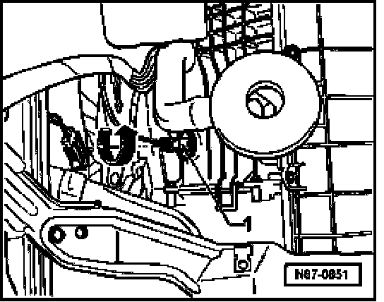

Procedures
Evaporator Temperature Sensor -G308-, Removing And Installing
Removing
- Remove lower instrument panel trim

- Turn temperature sensor -1- in direction of -arrow- approx. 90 degrees.
- Disconnect electrical connection.-A-.
- Remove sensor.
Installing
- Install in reverse order of removal.